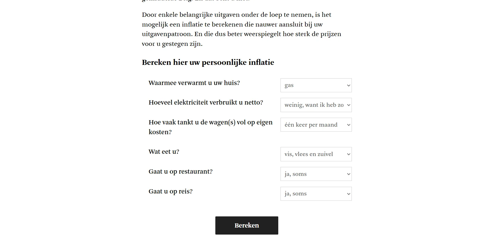
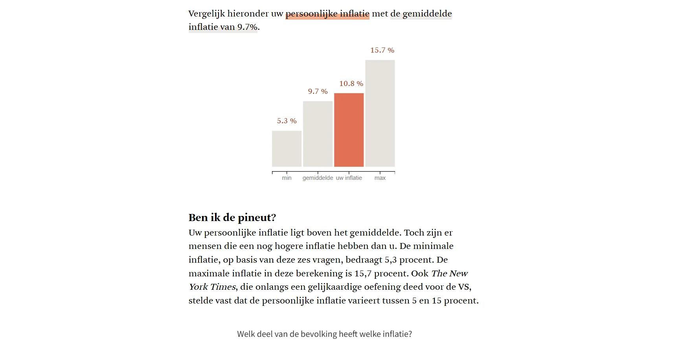
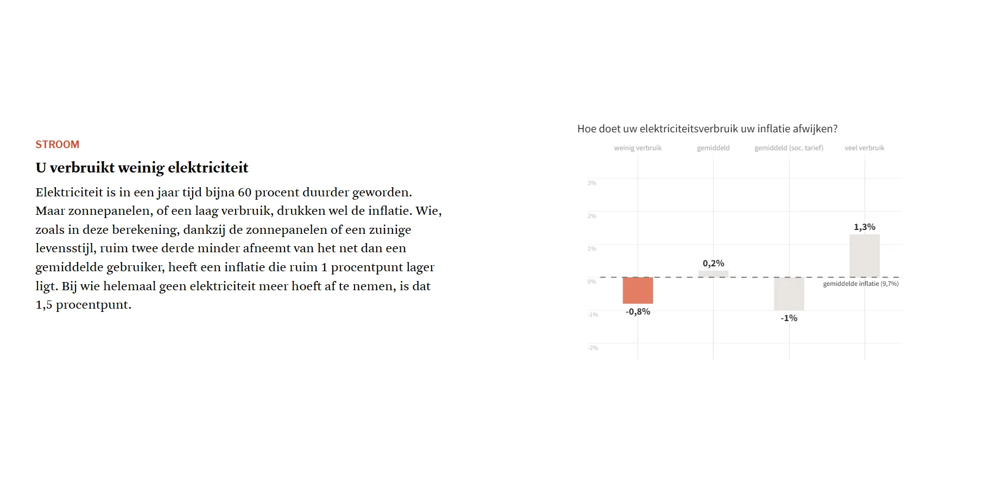

The official inflation rate of 9.7% was an average, and you are not average. Six questions about heating, electricity, fuel, food, restaurants and travel calculate your personal inflation.


A scrollytelling infographic, built with Scrollama and D3.js, shows for each category how your choices play a part. The tool compares your result with the rest of the population and calculates the effect on your purchasing power. The calculations came from Dries De Smet.

Made with
Made by
- Dries De Smet
- Text & calculations
- Andy Stevens
- Data visualisation & development
- Tina Boeykens
- Data visualisation & development